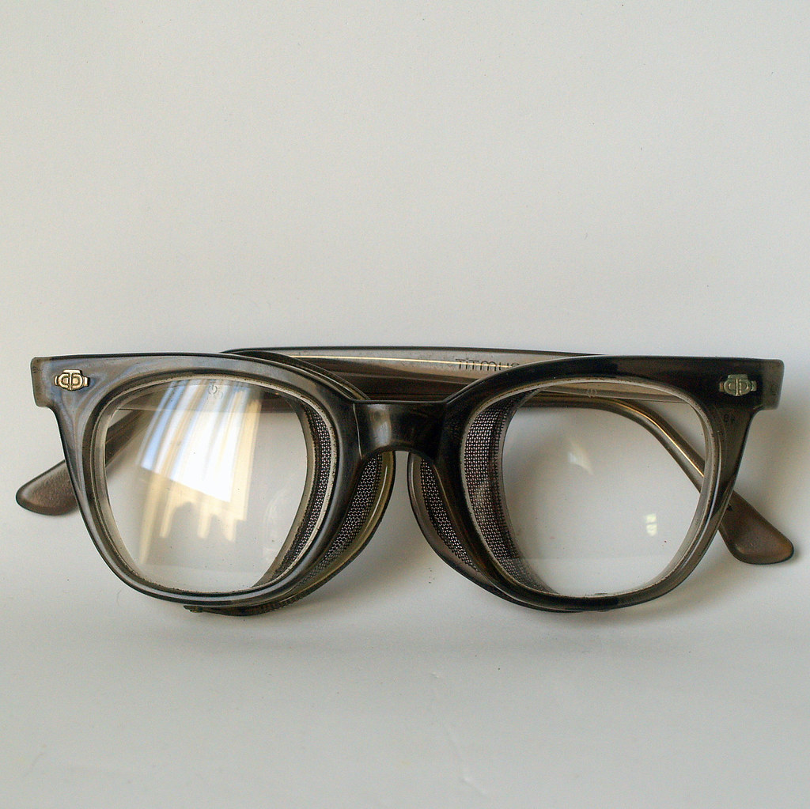
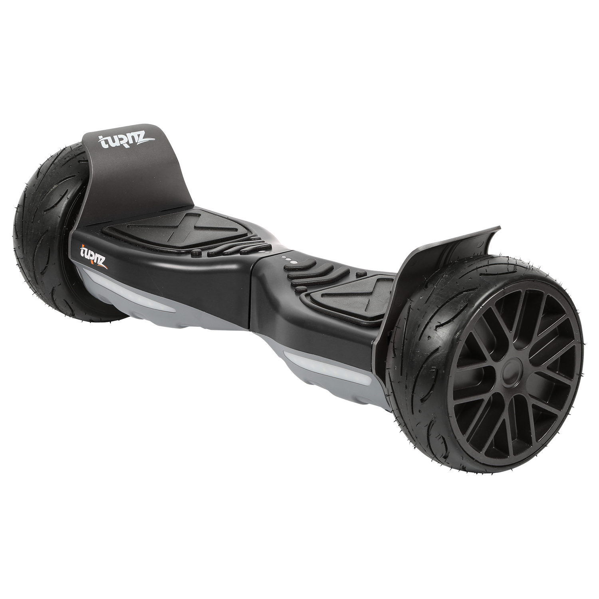

My Case Study
Test Image 1-

Microsoft Azure - A Watch
MobileNet - Undifined
Microsoft Azure is more accurate.
Test Image 2-

Microsoft Azure - Sunglases
MobileNet - Loud speaker
Microsoft Azure is more accurate.
Test Image 3-

Microsoft Azure - Undefined
MobileNet - Desk
MobileNet is more accurate.
Test Image 4-
Microsoft Azure - A Chair
MobileNet - Washbasin
Microsoft Azure is more accurate.
Test Image 5-
Microsoft Azure - A Clock
MobileNet - Analog Clock
MobileNet is more accurate.
Conclusion- There were 5 test images. For two of the images MobileNet was more accurate. For three of the images Microsoft Azure was more accurate. As per this test, Microsoft Azure is more accurate.